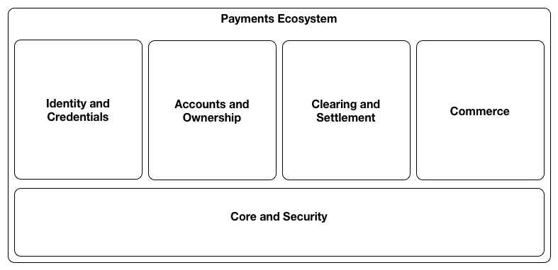
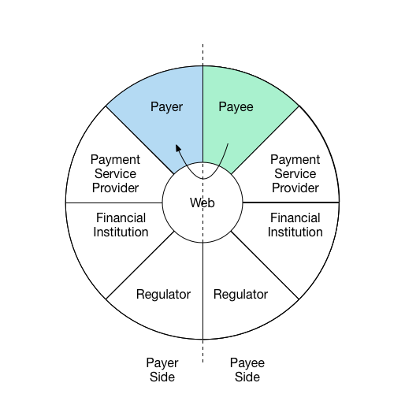
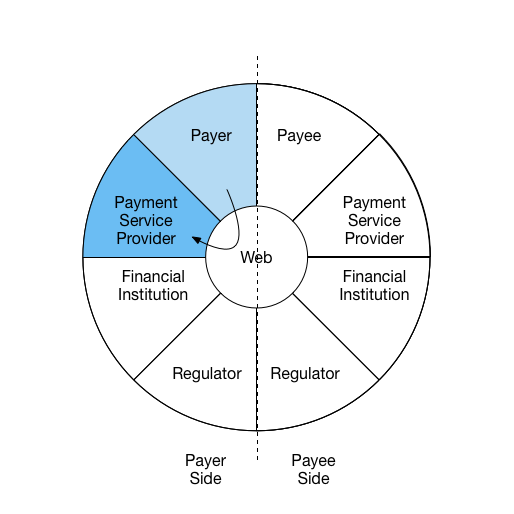

Introduction
Overview
In October of 2014, the W3C chartered the Web Payments Interest group with the goal of providing a forum for Web Payments technical discussions to identify use cases and requirements for existing and/or new specifications to ease payments on the Web, and to establish a common ground for organizations providing payment services on the Web Platform. The overall objective of this group is to identify and help create the conditions for greater uptake and wider use of Web Payments through the identification of standardization needs to increase interoperability between the different stakeholders and the different payment methods.
The Web Payments Interest Group's scope covers payment transactions using Web technologies on all computer devices (desktop, laptop, mobile, tablet, etc.) running a Web user-agent (a Web browser, a hybrid app, or an installed Web application) and using all possible legal payments methods across a variety of scenarios including Web-mediated Business-to-Consumer (B2C), Business-to-Business (B2B), Business-to-Business to Consumer (B2B2C), and Person-to-Person (P2P) transactions in the case of physical (payment at physical shops) and online payments for physical or digital goods, including in-app payments.
Due to the fundamental importance of payments to the web and the intricate relationship with other core aspects of the open web platform such as identity and commerce, the Web Payments IG created this document with the following goals in mind:
- Provide a common place to capture and document key capabilities that are necessary for payments on the web
- Communcate important architectural principles related to payments on the web and how they relate to other standards such as identity and commerce
- Increasing visibility and improving coordination of various payments and related standardization efforts within the W3C Interest, Working, and Community groups and other standards bodies
Audience of this document
This document is intended to broadly inform discussions on standardization of key capabilities and high level architecture of payments on the web. The intended audience for this document includes:
- Participants in W3C Activities
- Other groups and individuals designing technologies to be integrated into the Web
- Implementers of W3C specifications
- Web content authors and publishers
Scope of this document
This document presents the general capabilities and architecture of payments on the Web and is one part of a greater body of work around Web Payments
that the W3C is producing. These other documents include:
Web Payments Interest Group Documents
-
A Vision for Web
Payments describes the desirable properties of a Web Payments
architecture.
-
Web Payments
Use Cases 1.0 is a prioritized list of all Web Payments scenarios
that the Web Payments Interest Group expects the architecture to
address in time.
-
Web Payments Capabilities 1.0 (this document) derives a set of
capabilities from the use cases that, if standardized, will improve
payments on the Web.
-
Web Payments Roadmap
1.0 proposes an implementation and deployment plan that will
result in enhancements to the Open Web Platform that will achieve the
scenarios outlined in the Use Cases document and the capabilities
listed in the Capabilities document.
Web Payments Community Group Documents
Capability Domains
In order to illustrate core aspects of payments on the web, this section of the document is organized by functional capability domains. This is intended to help highlight specific areas that are needed for standardization of payments, and also to help communicate relationships and dependencies to adjacent standards work such as Identity and Commercial aspects of the web.
The capabilities have been organized into course grained domains which were structured to help promote consistent and cohesive concepts in similar functional aspects, reduce coupling between core payments standards and those which are useful more broadly than payments, and to minimize redundant or overlapping work being done on standards in this space by providing visbility into cross cutting concerns and topics across each functional domain.
Each capability includes backgound context specific to its domain, key goals and architecural principles related to the capability and outlines significant relationships with other standards work and capability domains. The five top level capability domains are represented in the diagram below:

Core and Security
These capabilities provide the
security foundation for payments.
Capabilities: Key Creation and Management,
Cryptographic Signatures, Encryption
Right now this group has only security capabilities in it. We may
wish to have a more general purpose Core set. If so, what would this
core set include?
Identity and Credentials
Includes features related to
establishing trust among parties, and credentialing or authorization
of parties involved in a transaction.
Capabilities: Identity, Credentials, Rights,
Authentication, Authorization, Privacy, Discovery, Registration,
Enrollment, and Legal/Regulatory concerns.
Accounts and Ownership
Includes capabilities
related to managing stores of value (such as Deposit Accounts) and
recorded accounts of ownership (such as Ledger entries, Deeds, etc.)
used as part of the settlement of payments or commercial exchanges.
Settlement via the Web involves access to the accounts of the
participants and ledgers of the account
providers and capabilities to manage accounts and capture and
monitor transactions in a ledger against those accounts.
Capabilities: Accounts, Account Management and Legal/Regulatory concerns related to accounts and recorded ownership
Clearing and Settlement
These are the capabilities
that help parties in a transaction establish the mechanics of how the
payment will be executed and the directly or indirectly make this
happen. This involves the ability to discover and negotiate the
mechanism that will be used to execute the payment and agree on the
terms including facts such as the costs of making the payment, time
between clearing of the payment and settlement into the payee's
account, regulatory requirements and required authorisations.
Capabilities: Messaging, Clearing, Markets, Foreign/Currency Exchange, and Legal/regulatory concerns specific to payment clearing, settlement and Exchange of Value.
Commerce
Includes capabilities related to
commercial and economic interactions.
Capabilities: Offers, Invoicing, Receipts, Loyalty,
Rewards, Contracts, Lending, Insurance, Taxation, Legal/Regulatory
concerns related to aspects of commercial and economic interactions.
Capabilities in Context
We will be overhauling this section to move into Key principles section and simplify the intent of the interaction wheel - namely the key principle that activities related to payments and adjacent domains may take place asynchronously over an extended time horizon and that required standards may be best expressed as a discrete interactions between 2 parties which can be recombined to express larger payments "flows" or multi-step scenarios.
To simplify and harmonize the descriptions of capabilities necessary for
payments and value exchange on the Web, it is helpful to understand the
parties involved and the direction that information flows among them at
various
phases of a payment. We use the following diagram to help illustrate
roles and information flow:

Figure: Payment Interaction Wheel
For example, the following diagrams illustrate three interactions in a
comment payment scenario.

Interaction 1:
Payee communicates request for payment to payer and shares
payment instructions

Interaction 2:
Payer uses information received from Payee and creates a
new payment request from payment service provider with stored
value.

Interaction 3:
Payer's payment service provider sends
details to complete payment to Payee's payment
service provider
The roles illustrated here may be carried out by many different
entities. For example, "account provider" may be carried out by
financial institutions, mobile operators, tech companies, or
cryptocurrency systems; 'payee' may be an individual, a business,
an NGO, or any entity that can accept a payment.
A payment may involve just two parties (e.g., peer-to-peer) or may be
carried out by several collaborating parties. For instance, apayee may use a payment service provider which in turn uses a
card network. The actions of these intermediaries may vary, from simply
forwarding messages to fulfilling regulatory obligations. Additionally,
these interactions may happen in different sequences and direction
depending on the payment context.
Capabilities in Detail
Core and Security
-
Key Management
-
All participants require an interchangeable mechanism for
creation, management, storage, and exchange of cryptographic keys
-
Key management capabilities are required to:
-
Securely communicate unique identifiers of payment process
participants
-
Digitally sign and authenticate information exchanged as
part of the payments process (e.g., payments, receipts,
invoices, etc.)
-
Provide reference key for independent elements of the
payments process to compose/link transactions and related data
across asynchronous segments of the payment process
-
Cryptographic Signatures
-
Information transferred should be cryptographically signed to
ensure
-
Authenticity of the participants and ownership of
value/asset being transferred or exchanged
-
Nonrepudiationof participants intent related to information
/ communication being exchanged
Key Concepts:
(describe any key concepts/relationship to other capabilities here)
Suggested Deliverables:
-
Data model with a concrete syntax for expressing data in the
architecture
-
Web-based key public key infrastructure data formats and protocols
-
New normalization mechanisms for data model serialization (if
necessary, for digital signatures)
-
Digital signature mechanism for data model
Related Specifications:
-
Data models: Graph (RDF), Document/Tree (JSON, XML)
-
Syntaxes: XML, JSON, JSON-LD
-
Normalization: XML Canonicalization, RDF Dataset Normalization
-
Signatures: Linked Data Signatures, Javascript Object Signing and
Encryption, XML Digital Signature
Responsible Working Group(s) or Standards Bodies:
-
Linked Data Signatures Working Group (W3C)
-
JOSE (IETF)
Identity and Credentials
The word identity means different things to different people
and is often discussed as a problem waiting to be solved on the Web. In
the physical world, we have many identities. We have an identity for
work life and home life. We have an identity that we use when we talk
with our friends and one that we use when we talk with our families. The
concept of identity is as nuanced as it is broad.
There are aspects of our identities that have very little consequence
to others, such as whether we have dark brown hair or black hair. There
are also aspects of our identities that are vital for proving that we
should be able to perform certain tasks, like a drivers license or
a medical board certification. Then there are aspects of our identities
that are important for social reasons, such as the rapport that we build
with our friends over our lifetimes.
Many aspects of our identity are often expressed via
credentials, which can be seen as verifiable statements made by
one person or organization about another. There have been multiple
attempts at formalizing credentials on the Web; each one of them have
been met with varying degrees of mild success, but mostly failure. The
rest of this section focuses on the goals of a healthy identity and
credentialing ecosystem as well as capabilities that would enable such
and ecosystem to thrive.
Goals
A healthy credentialing ecosystem should have a number of
qualities:
- Credentials should be
interoperable and portable. Credentials should be
used by as broad of a range of organizations as possible. The
recipient of a credential should be able to store, manage, and share
credentials throughout their lifetime with relative ease.
- The ecosystem should scale to the 3
billion people using the Web today and then to the 6 billion
people that will be using the Web by the year 2020.
- The process of exchanging a credential should be
privacy enhancing and recipient
controlled such that the system protects the privacy of the
individual or organization using the credential by placing the
recipient in control of who is allowed to access their
credential.
- Implementing systems that issue and
consume credentials should be easy for Web developers
in order to lower barriers to entry and increase the amount of
software solutions in the ecosystem.
- Creating systems that are
accessible should be a fundamental design criteria,
as 10% of the world’s population have disabilities and the solution
should be usable by as many people as possible.
- The solution should follow a number of core Web
principles such as being patent and royalty-free,
adhering to Web architecture fundamentals, supporting network
and device independence, and being
machine-readable where possible to enable
automation and engagement of non-human actors.
Capabilities
-
Identity
-
Entities in the System are able to access Identity information
of other parties it is interacting with if specifically required by
law, or if consented to by owner of the information
-
Identity and credentials of an entity are able to be
linked/associated with Accounts and payments to satisfy requirements
for Account Providers and
Payments Service Providers
to comply with KYC/AML requirements.
-
Credentials
-
Entities in the system are able to be associated with 1 or more
credentials. A credential is a qualification, achievement, quality,
or piece of information about an entity's background such as a name,
home address, government ID, professional license, or university
degree, typically used to indicate suitability. This allows for the
exchange of suitable qualities of the entity (ex. over age 21)
without divulging sensitive attributes/details about the entity (ex.
date of birth)
-
Payer is able to exchange standard format credentials withPayee
to validate attributes necessary to complete the payment
-
Entities in the system may store a credential at an arbitrary identity
provider after it has been issued by an arbitrary issuer. This helps create a
level playing field for all actors in the ecosystem.
-
A protocol for migrating from one identity provider to another without
the need to reissue each credential. This promotes a healthy identity
provider ecosystem.
-
Data Model
-
The data model should be extensible such that it supports an entity making
an unbounded set of claims about another entity. This enables a very
broad applicability of credentials to different use cases and market verticals.
-
The data model should be capable of being expressed in a variety of data
syntaxes. This increases interoperability between disparate credentialing
systems and increases the long-term viability of the technology.
-
A formal mechanism of expressing new types of claims without
centralized coordination. This promotes a high degree of parallel
adoption and innovation.
-
Rights
-
An entity should be able to express what "allowable use" of a credential
is when providing it to another entity such that there is recourse if a
credential is misused. For example, when providing an email address credential
an assertion is made such that the email address cannot be used as a
destination for marketing material.
-
Authentication
-
Participants are able to authenticate the validity of
identifiers presented by entities that they are interacting with
-
A digital signature mechanism that does not require out-of-band information to
verify the authenticity of claims; instead it should enable public
keys to be automatically fetched via the Web during verification. It
should not render the signed data opaque because opaque data is harder
to learn from, program to, and debug. This makes the digital signature
mechanism easier to use for developers and system integrators.
-
An issuer should be able to revoke a previously issued credential. This
enables issuers to ensure that the credentials they have issued
accurately represent their claims throughout the lifetime of the credential.
-
Authorization
-
Entities may use credentials to get access to protected resources or get
approval to perform protected tasks.
-
Privacy
-
All capabilities in this document should be standardized in a
way that minimizes the inclusion/exchange of personal or other
sensitive metadata that are part of the payments process unless
specifically required by law, or consented to by the owner of the
information.
-
A protocol that enables the recipient to share their credentials without
revealing the intended destination to their identity provider. This
enhances privacy.
-
Discovery
-
Payer is able to securely locate public identifier ofPayee to be used as part of payment process
-
Payee is able to obtain public identifier of Payer
participating in payment process
-
Payer identifier is persistent across devices
-
Registration
-
Payer and Payee able to register with payment
service provider to obtain credentials used for payments
process
-
Enrollment
-
Payment service provider is able to perform the necessary steps
during payer/payee enrollment to collect required identity
and credential information about the payer/payee and
associate it with an Account.
-
Regulatory and Legal
-
Entities should be able to detect when the collection of particular data
would violate personally identifiable information regulations. For example,
collecting the name and home address of a minor should be detectable and
avoided in jurisdictions where that is not allowed.
-
Entities should be able to easily request credentials and prove that they
performed the required regulatory checks before allowing a transaction
to complete. Ideally, this process should be automated.
Key Concepts:
TO DISCUSS: Trust Agent???
Suggested Deliverables:
-
Data format and vocabularies for expressing cryptographically
verifiable credentials
-
Protocol to issue credentials to a recipient
-
Protocol to store credentials at an arbitrary location as decided by
a recipient
-
Protocol to request and transmit credentials, given a recipient's
authorization, to a credential consumer
-
Protocol to strongly bind an identifier to a real world identity and
a cryptographic token (ex: two-factor hardware device)
-
Protocol to request and deliver untraceable, short-lived, privacy
enhancing credentials.
-
Protocol to discover entity's credential service
Related Specifications:
-
SAML (OASIS)
-
OpenID Connect (IETF)
-
Identity Credentials (Credentials WG)
-
Credentials Vocabulary (Credentials WG)
Responsible Working Group(s) or Standards Bodies:
-
Credentials Working Group (W3C)
-
Authentication Working Groups (W3C)
Accounts and Ownership
Accounts
-
Manage Accounts
-
Payers and Payees
(account owners) require the capability to create accounts at an
account provider.
-
Payers and Payees
require the capability to authorise access to their accounts by
third parties such as Payment
service providers.
-
Payers, Payees and other
authorised entities require the capability of checking the current
balance on an account.
-
Account Registration/Enrollmentat Payments service providers
-
Payers and Payees are
able to register accounts that will be used as part of the payment
process with Payment Services
Providers of their choice
-
Payers and Payees are
able to delegate access to specific account functions to Payment service providers of
their choice
-
Receive Funds
-
Payees are able to receive funds into
theiraccounts
-
Send funds
-
Payers are able to transfer funds from their
accounts
Key Concepts:
(describe any key concepts/relationship to other capabilities here)
Suggested Deliverables:
(include suggested/needed deliverables here)
Responsible Working Group(s) or Standards Bodies:
Related Specifications:
(Insert relevant related existing or in progress standards for
capability segment)
Ledgers
-
Discovery of Ledger services
-
Participants require the capability to locate the endpoints at
which ledger services are offered by an account provider
-
Participants require the capability to discover which services
are available against a ledger at an account provider
-
Capture transactions in ledger
-
Participants in the settlement process require the capability to
capture a transaction in a ledger transferring value from one
account to another on the same ledger.
-
Monitor a ledger
-
Participants in the settlement process require the ability
to monitor a ledger for new transactions that impact a specific
account.
-
Reserve funds in an account
-
To execute settlement across ledgers a counterparty may require
the ability to request that an account provider temporarily reserve
funds in an account while settlement is finalised on the other
ledger(s).
Key Concepts:
TODO
Suggested Deliverables:
-
Standardised data model for accounts and ledgers
-
Standardised interface for account management
-
Standardised interface for ledger services
-
Protocol for discovering ledger services
-
Protocol for executing settlement between participants on the open
Web
Related Specifications:
-
ISO20022 / X9 specs
-
Web Commerce Formats and Protocols (Web Payments WG)
-
Web Payments Vocabulary (Web Payments WG)
Responsible Working Group(s) or Standards Bodies:
-
Web Settlement Working Group (W3C)
Clearing and Settlement
-
Payment Instrument Discovery and Selection
-
Payer and payee are able to discover payment
instruments/schemes which they have in common and may be used in
the payment process
-
Payer is able to establish the different costs of making
the payment using the various combinations of payer andpayee instruments and schemes (payment methods)
-
Payer is able to select payment instrument for use in the
payment process
-
Payee is able to communicate requirements(or preference) to
payer as to whether a specific instrument is accepted and
the payment terms for using that instrument
-
Payment Initiation
-
Payer is able to initiate a payment using selected payment
instrument
-
Payer is able to identify Payee via:
-
Information received via Invoice
-
Individual contact information
-
Information from past payees
-
Payee is able to initiate a request for payment to payee's
designated account provider
-
Account provider is able to initiate a payment on behalf of the
Payee based on Payee's requested schedule and frequency (recurring
payment)
-
Payment Authorization
-
Payment service provider or payee is able to get
authorization from payer to execute payment either in real-time or
using a preloaded authorization mechanism
-
Payment service provider is able to demonstrate to payer
account provider that payment is authorised
-
Payment Execution
-
Payment orchestrator is able to evaluate that all requirements
have been met to execute the payment including authorization(s) and
compliance checks as required.
-
Payment orchestrator is able to instruct all participants to
execute the payment and perform any roll-back steps that may be
required in case of a failure by any participant to complete the
payment.
-
Payment Acknowledgement
-
Payee is able to receive confirmation that payment has been
successfully completed
-
Payer is able to receive verification that payment has been
successfully received
-
Account provider is able to receive confirmation that payment is
complete
-
Regulatory/Legal Compliance
-
Regulator is able to access/view required payment, payer,
and payee details for payments that take place within their
jurisdiction
-
Regulator is able to intervene in payments meeting or
exceeding certain thresholds or criteria in order to comply with
jurisdictional laws and requirements
-
Payment Settlement and Clearing
-
Payment service provider is able to provide payer with
quotesto settle payee via all payee supported payment
schemes
Key Concepts:
TODO: Payment Agent
Suggested Deliverables:
-
Protocol for discovering all payment instruments available to a
payer.
-
User Agent API and REST API for initiating a payment and protocol
for routing an invoice to a payment service
-
Protocol for authorizing payment via regulatory API
-
User Agent API and REST API for completing a payment and protocol
for routing payment acknowledgement to payer
Related Specifications:
-
ISO20022 / X9 specs
-
Web Commerce Formats and Protocols (Web Payments WG)
-
Web Commerce User Agent API (Web Payments WG)
-
Web Payments Vocabulary (Web Payments WG)
Responsible Working Group(s) or Standards Bodies:
-
Web Payments Working Group (W3C)
Commerce
Offers
-
Generate Offer
-
Payee is able to generate a standard format offer which
provides information on specific products or services being
offered, and additional information on payment instruments
accepted, or terms of the offer.
-
Payer is able to generate a standard format offer which can
be accepted or declined by the payee.
-
Payee is able to create scheduled/recurring offers
-
Receive Offer
-
Payer is able to receive offer in machine readable format
and use it to initiate payment request
-
Payeeis able to receive offer in machine readable format and use
it to create invoice
Discounts
-
Payee is able toable tocommunicate discounts which may be
applied to Offers
-
Payee is able to receive and apply discount to offer
-
Payee is able to apply standard loyalty identifiers to offers
Coupons
-
Payer is able to apply coupons to offers
-
Payee is able to issue general use coupons
-
Payee is able to issue coupons specific to payer
identifier
Key Concepts:
Suggested Deliverables:
-
Data format and vocabularies for expressing offers and coupons
-
User Agent API for using an offer to initiate a payment
Related Specifications:
-
Web Commerce Formats and Protocols (Web Payments WG)
-
Web Commerce User Agent API (Web Payments WG)
-
Web Payments Vocabulary (Web Payments WG)
Responsible Working Group(s) or Standards Bodies:
-
Web Payments Working Group (W3C)
Invoices
-
Invoice creation
-
Payee is able to generate a standard formatted invoice and
communicate to Payer as part of the negotiation of payment
terms
-
Invoice receipt
-
Payer is able to receive standard formatted invoice
-
Invoice data
-
Invoice provides payer with Payment instructions for
making payment to Payee
-
Invoice identifier is returned to Payee via payment
process to verify payment is complete
Key Concepts:
Suggested Deliverables:
-
Data format and vocabulary for expressing an invoice
-
User Agent API for initiating a payment and protocol for routing an
invoice to a payment service
Related Specifications:
-
Web Commerce Formats and Protocols (Web Payments WG)
-
Web Commerce User Agent API (Web Payments WG)
-
Web Payments Vocabulary (Web Payments WG)
Responsible Working Group(s) or Standards Bodies:
-
Web Payments Working Group (W3C)
Receipts
-
Create Receipt
-
Payee is able to create receipt and communicate receipt to
Payer following completion of payment
-
Receive Receipt
-
Payer is able to receive receipt and persist for future use
(ex. returns, reimbursement, etc)
Key Concepts:
Suggested Deliverables:
-
Data format and vocabulary for expressing a receipt
-
Protocol for routing an receipt to a payer's receipt storage service
Related Specifications:
-
Web Commerce Formats and Protocols (Web Payments WG)
-
Web Payments Vocabulary (Web Payments WG)
Responsible Working Group(s) or Standards Bodies:
-
Web Payments Working Group (W3C)
Loyalty
-
Payer is able to register with Payee's loyalty program by
requesting loyalty identifier from Payee.
-
Payee can 'opt-in' to loyalty program by providing program
specific public identifier
Key Concepts:
Suggested Deliverables:
-
Same as 'Trust' deliverables
Related Specifications:
-
Identity Credentials (Credentials WG)
-
Credentials Vocabulary (Credentials WG)
-
Web Commerce Vocabulary (Credentials WG)
Responsible Working Group(s) or Standards Bodies:
-
Credentials Working Group (W3C)